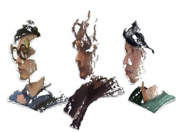
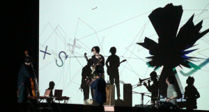

about

SjQ
「即興と設計」の狭間を結節する音楽プロジェクト。
プレイヤー同士の短いフレーズの遣り取りの連鎖から、<もつれ>による旋律とグルーヴを生み出し、楽曲を構築していく。
2010年以降は、音楽に軸足を置きながら現代アートシーンでも活動を展開。
2013年、映像アーティストKezzardrixをメンバーに加えたプロジェクト［SjQ++］で、
国際的なメディアアートの祭典・Ars Electronica2013・デジタルミュージック部門のAward of distinction(準グランプリ）を受賞。
2020年、11年ぶりとなるニューアルバム『torus』をリリース予定。
member
- Yuta Uozumi (Pf , Pgm)
- Isao Nakagaito (Gt.)
- Shuhei Otani (Ba.)
- Daiki Asari (Pl.)

SjQ++
The audiovisual project [SjQ++] compose their music using a multi-agent system in real-time. A multi-agent system is a bottom-up method used in the field of computer simulation. The agents (players) create the patterns through their interactions based on a simple rule. In [SjQ++], its visual image acts as a catalyst to make the ensemble interact. It visualizes the behavior of each player based on its sound data.
The system can manage the meaning of sound. For example, it connects each player’s relations through motions of the sounds visualized. In addition, it uses animation to make each player cooperate/compete. Control of the interaction flow produces a dynamic performance. The audience experiences the performance of further indivisibility between the sound and the visual. Their sounds and visuals are synchronized perfectly by programming, and both are also affected by one another and change their performance accordingly.
AWARDS:
演奏者間の映像を介した相互行為によって、パフォーマンスをその場で生み出すプロジェクト。
演奏者はリアルタイムで映像上に表現される光に反応して音を発し、その音は再帰的に映像を形成する。
この不断の連続により、音、光、グラフィック、それぞれが不可分の形で編み込まれ、独自の体験を会場にいる者に提供する。
現代アート／クラブ／電子音楽の境界の狭間で活動を展開。
2013年、メディア・アートの世界的な賞である「アルス・エレクトロニカ」において準グランプリ受賞（デジタルミュージック部門）。